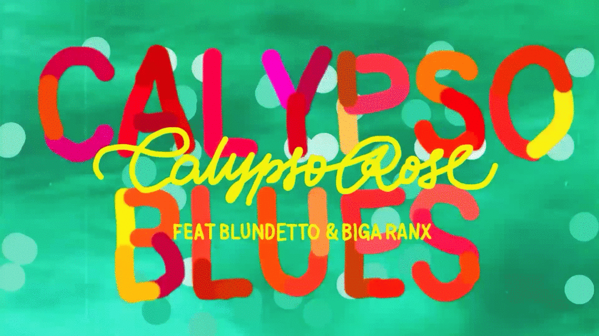
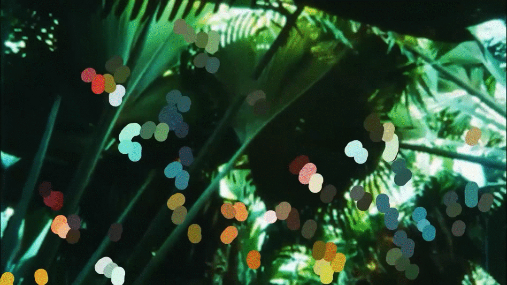
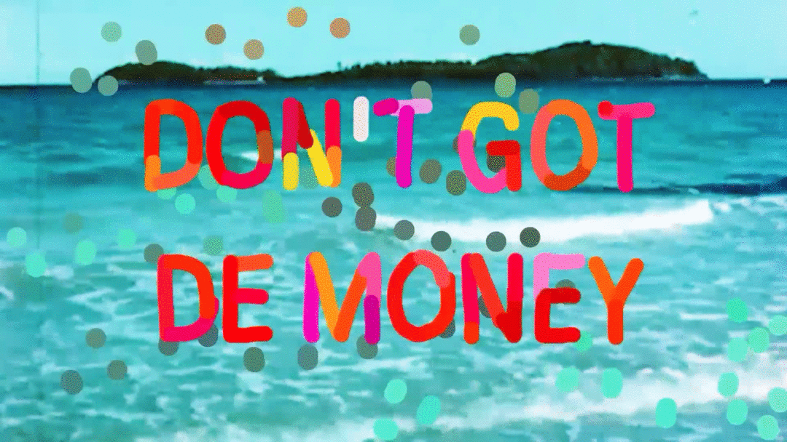
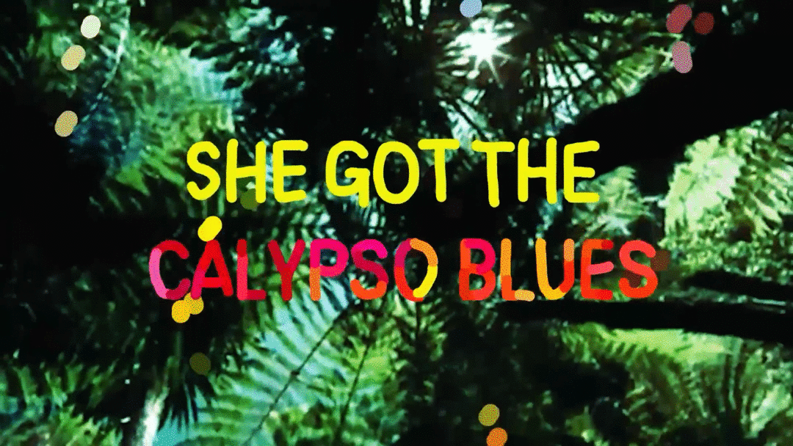

Calypso Rose — Quand la contrainte devient identité

Comment raconter une histoire rythmée avec une matière première dégradée ? Pour ce clip musical, je ne pouvais m'appuyer que sur une sélection d'images libres de droits, souvent de qualité inégale. J'ai conçu un système visuel — une surcouche graphique et typographique — pour unifier ces fragments et dicter un rythme au service exclusif de la musique.
Le Contexte
Production d'un lyrics clip pour un projet musical de Calypso Rose. Le format exige une attention particulière au texte et au rythme, tout en proposant une identité visuelle forte pour habiller le morceau.
Mon Rôle
Directeur artistique et monteur vidéo — lead complet sur la conception visuelle et technique, de l'intention initiale au rendu final livré.
Les Contraintes
- Matière première contrainte — Banque d'images hétérogènes et de qualité inégale, sans possibilité de tournage.
- Narration — Structurer une histoire cohérente avec des éléments disparates.
- Temps de production — Délai extrêmement court, impose des choix directeurs rapides.
L'Approche
- Le tri analytique — Sélectionner les images pour leur capacité rythmique, pas seulement leur qualité.
- Le système visuel — Création d'une surcouche graphique pour unifier et masquer l'hétérogénéité.
- Le montage — Synchronisation millimétrée entre typographie et musique.
Le Résultat
Livraison d'un clip dynamique et cohérent. La contrainte initiale est devenue l'identité même de la vidéo — mettant en valeur le texte par une hiérarchisation visuelle stricte et un rythme maîtrisé.


